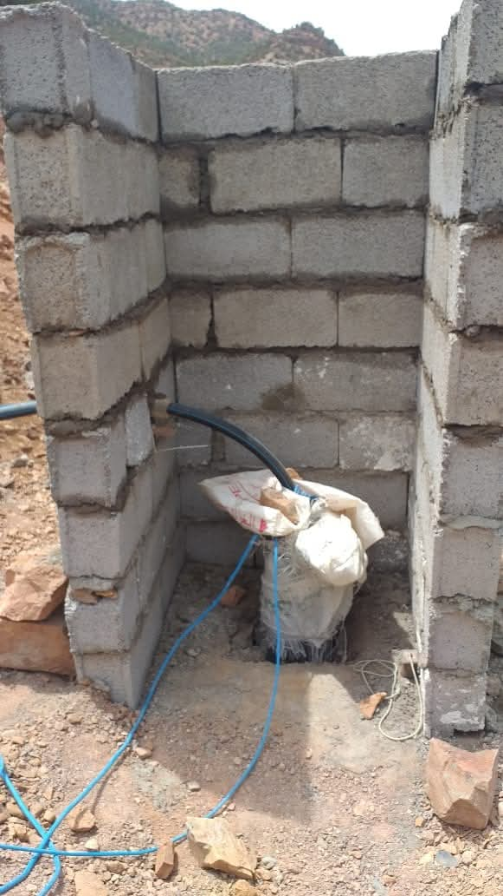
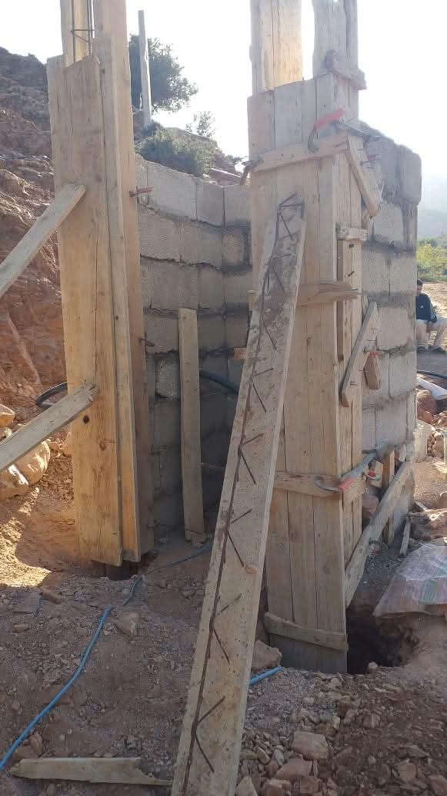
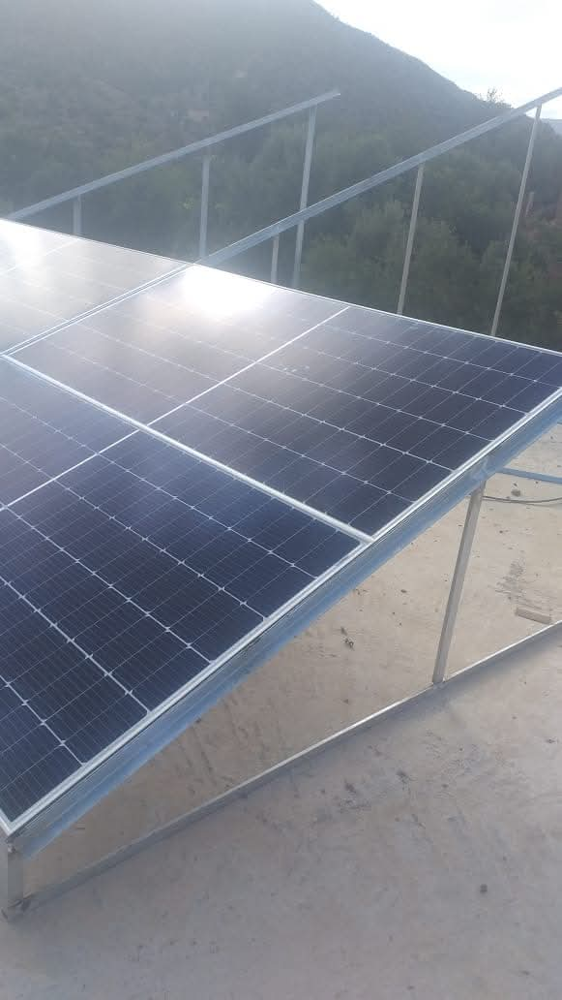

Forage et installation d’un puits à Tinlaf
🙏🏻 الحمد لله حمداً كثيراً طيباً مباركاً فيه،
بفضل من الله تعالى، تم إنجاز عملية حفر بئر بدوار تنلاف، وذلك بمساهمة أحد المحسنين جزاه الله عنا خير الجزاء وجعلها في ميزان حسناته. أما تجهيزات المشروع من مضخة وألواح الطاقة الشمسية والأنابيب وغيرها، فقد تكفلت بها جمعية تنلاف للتنمية والتعاون، التي لم تدخر جهداً في سبيل إيصال الماء الصالح للشرب إلى الساكنة.
كما نتوجه بجزيل الشكر للسيد قائد المنطقة ولجميع السلطات المحلية التي ساهمت في تيسير هذا المشروع الخيري رغم بعض العراقيل.
نسأل الله تعالى أن يجزي كل من ساهم في هذا العمل المبارك خير الجزاء، وأن يبارك فيهم وفي أموالهم، ويجعله صدقة جارية تنفعهم يوم لا ينفع مال ولا بنون.
بفضل من الله تعالى، تم إنجاز عملية حفر بئر بدوار تنلاف، وذلك بمساهمة أحد المحسنين جزاه الله عنا خير الجزاء وجعلها في ميزان حسناته. أما تجهيزات المشروع من مضخة وألواح الطاقة الشمسية والأنابيب وغيرها، فقد تكفلت بها جمعية تنلاف للتنمية والتعاون، التي لم تدخر جهداً في سبيل إيصال الماء الصالح للشرب إلى الساكنة.
كما نتوجه بجزيل الشكر للسيد قائد المنطقة ولجميع السلطات المحلية التي ساهمت في تيسير هذا المشروع الخيري رغم بعض العراقيل.
نسأل الله تعالى أن يجزي كل من ساهم في هذا العمل المبارك خير الجزاء، وأن يبارك فيهم وفي أموالهم، ويجعله صدقة جارية تنفعهم يوم لا ينفع مال ولا بنون.
🙏🏻 Louange à Dieu, infiniment et abondamment,
Grâce à Allah Tout-Puissant, un puits a été creusé au douar Tinlaf, avec la contribution généreuse d’un bienfaiteur – qu’Allah le récompense et place cet acte dans la balance de ses bonnes actions. Quant aux équipements nécessaires (pompe, panneaux solaires, tuyaux, etc.), ils ont été fournis par l’Association Tinlaf pour le Développement et la Coopération, qui a déployé tous ses efforts pour assurer l'accès à l'eau potable pour les habitants.
Nos remerciements vont également à Monsieur le Caïd de la région ainsi qu’à toutes les autorités locales ayant facilité ce projet malgré certains obstacles.
Nous prions pour que tous les contributeurs soient comblés par la satisfaction divine, la bénédiction et la rétribution éternelle.
Grâce à Allah Tout-Puissant, un puits a été creusé au douar Tinlaf, avec la contribution généreuse d’un bienfaiteur – qu’Allah le récompense et place cet acte dans la balance de ses bonnes actions. Quant aux équipements nécessaires (pompe, panneaux solaires, tuyaux, etc.), ils ont été fournis par l’Association Tinlaf pour le Développement et la Coopération, qui a déployé tous ses efforts pour assurer l'accès à l'eau potable pour les habitants.
Nos remerciements vont également à Monsieur le Caïd de la région ainsi qu’à toutes les autorités locales ayant facilité ce projet malgré certains obstacles.
Nous prions pour que tous les contributeurs soient comblés par la satisfaction divine, la bénédiction et la rétribution éternelle.

Installation du puits à Tinlaf

Installation du puits à Tinlaf

Installation du puits à Tinlaf